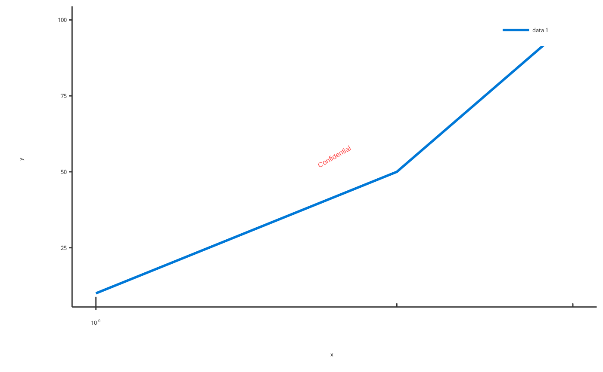
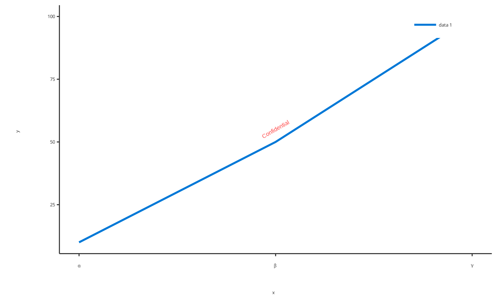
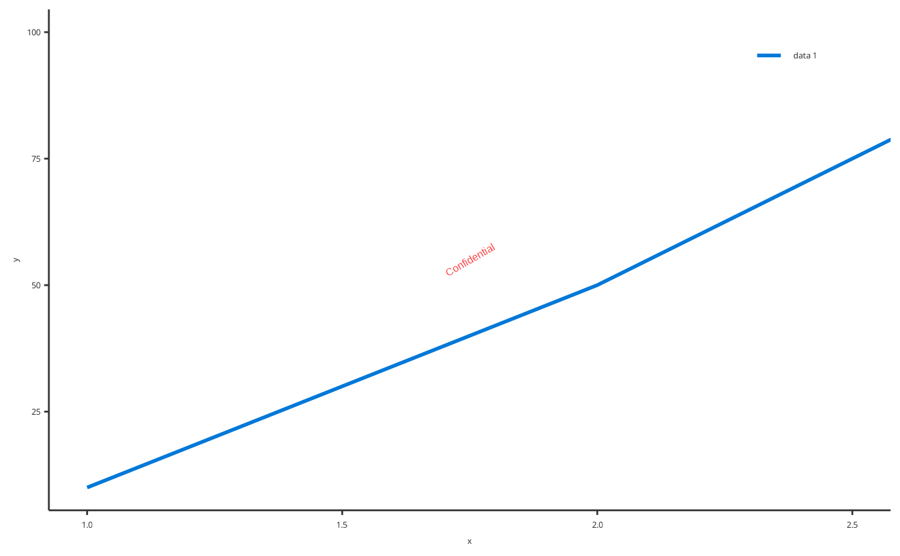
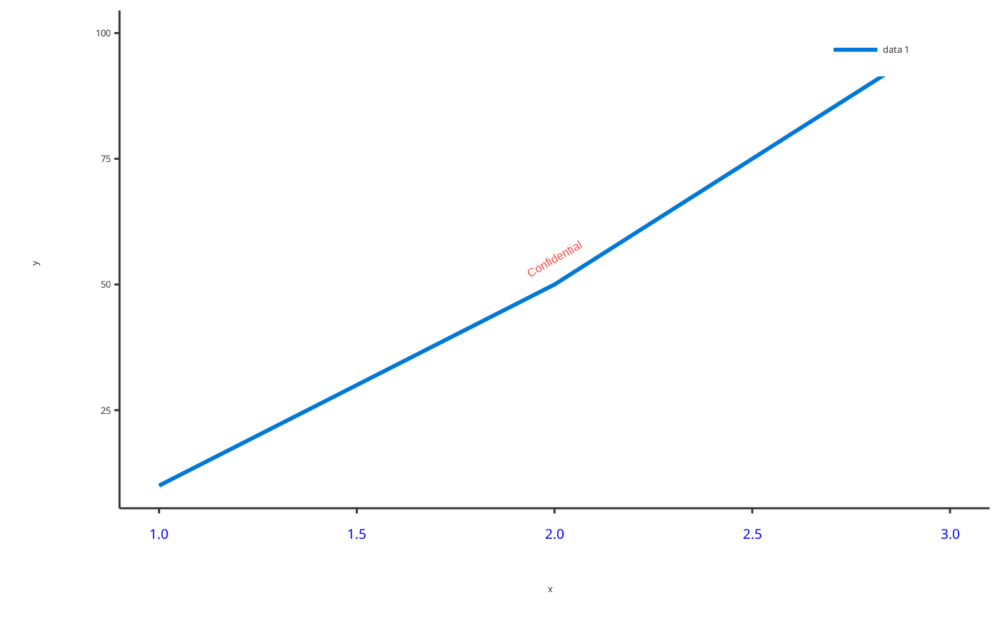

Set X-axis properties of a ggplot object
Usage
setXAxis(
plotObject,
scale = NULL,
valuesLimits = NULL,
axisLimits = NULL,
limits = lifecycle::deprecated(),
ticks = NULL,
ticklabels = NULL,
minorTicks = NULL,
font = NULL,
expand = NULL
)Arguments
- plotObject
A
ggplotobject to set X-axis properties- scale
Scale of axis. Use enum
Scalingto access names of scales.- valuesLimits
Optional numeric values of values limits
- axisLimits
Optional numeric values of axis limits
- limits
![[Deprecated]](figures/lifecycle-deprecated.svg) . Replaced by axisLimits argument.
. Replaced by axisLimits argument.- ticks
Optional values or function for axis ticks
- ticklabels
Optional values or function for axis ticklabels
- minorTicks
Optional values or function for axis minor ticks
- font
A
Fontobject defining font of ticklabels- expand
Logical defining if data is expanded until axis
Examples
myPlot <- addLine(x = c(1, 2, 3), y = c(10, 50, 100))
# Set x-axis in log scale
setXAxis(myPlot, scale = Scaling$log)

# Set x-axis ticklabels to Greek letters
setXAxis(myPlot, ticks = c(1, 2, 3), ticklabels = parse(text = c("alpha", "beta", "gamma")))

# Set x-axis limits
setXAxis(myPlot, axisLimits = c(1, 2.5))

# Set x-axis fonts
setXAxis(myPlot, font = Font$new(color = "blue", size = 14))
